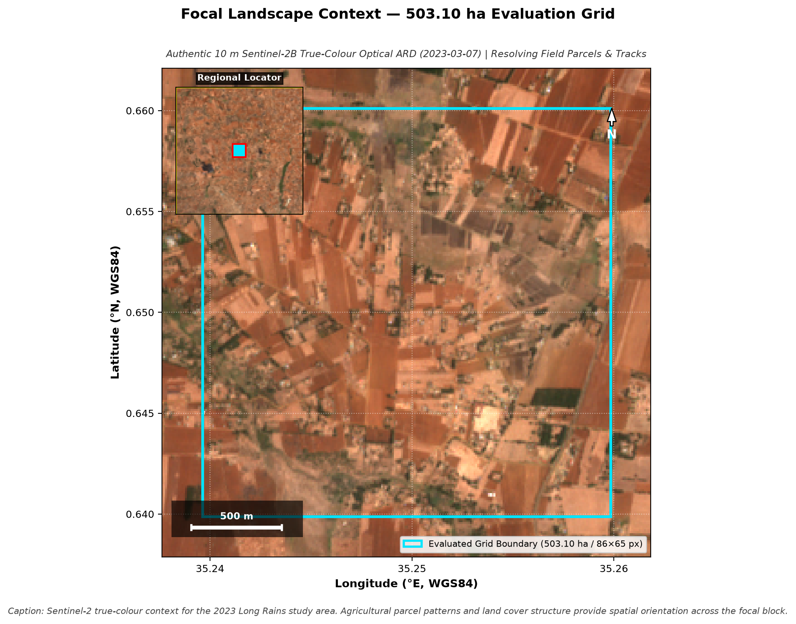
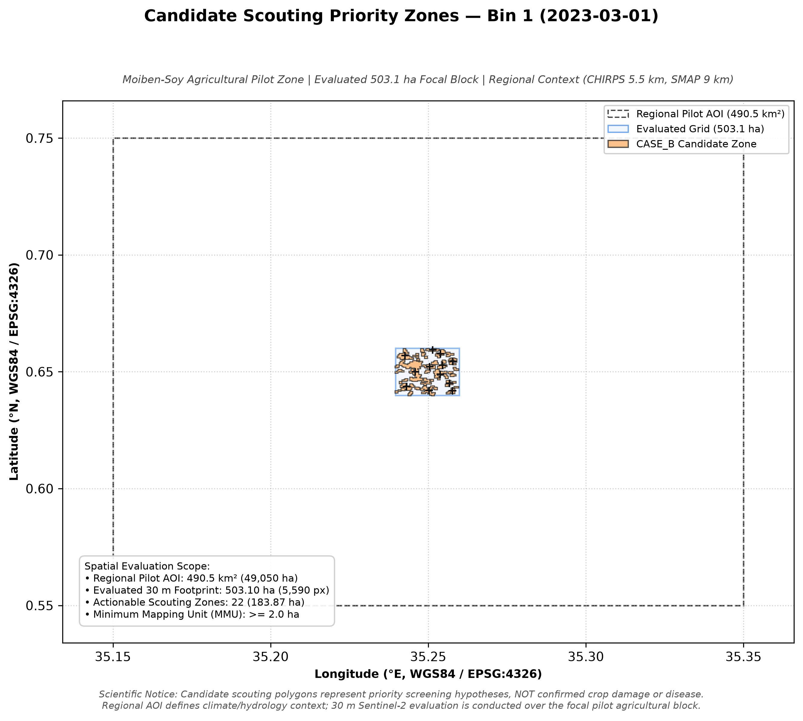
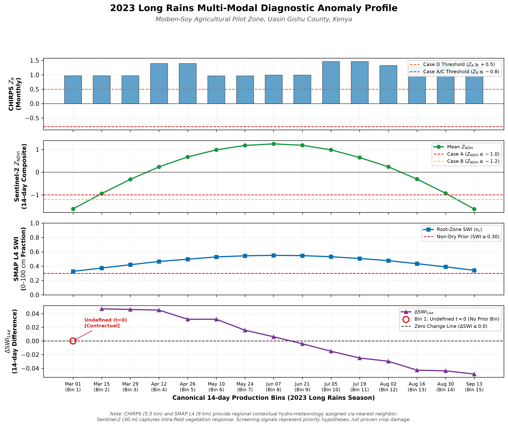

01 / Optical vigor
Sentinel-2 L2A
10–30 m optical grid
Native-resolution optical observations track canopy biomass, vegetation vigor and seasonal phenology. The focal screening grid is evaluated at 30 m.
Translating satellite Earth observation into actionable UAV scouting corridors — connecting climate, hydrology and canopy signals without overstating what the data can prove.
Three complementary observation layers establish environmental context before a stress signal becomes an operational scouting hypothesis.
Native-resolution optical observations track canopy biomass, vegetation vigor and seasonal phenology. The focal screening grid is evaluated at 30 m.
Gridded precipitation estimates characterize macro-scale meteorological conditions and anomalies against long-term baselines.
Satellite-assimilated root-zone moisture dynamics support hydrological screening while remaining explicitly coarse relative to the optical grid.
From landscape context to anomaly detection, then from anomaly detection to discrete scouting corridors.

Sentinel-2 true-colour · focal gridAuthentic Sentinel-2 true-colour imagery grounds the focal agricultural landscape before analytical interpretation.

Bin 01 · spatial diagnosticStandardized vegetation departures isolate early-season anomalies requiring field verification; they do not establish cause.
 Flag → triage progression
Flag → triage progressionCandidate spatial boundaries become priority UAV or field-scouting hypotheses. The project reports 22 clusters in Bin 1 and 28 across the season.
Temporal diagnostics connect environmental signals with observed vegetation response while keeping causal claims deliberately bounded.
Multi-modal signal comparison across the 2023 long-rains season

The profile tracks the observed relationship between root-zone moisture dynamics and canopy vigor during the 2023 season. These screening indicators can support harvest planning, parametric insurance workflows and regional commodity supply-chain planning.
Screening signals represent priority hypotheses for targeted field verification — such as UAV thermal or RGB scouting — rather than proven causal crop damage.